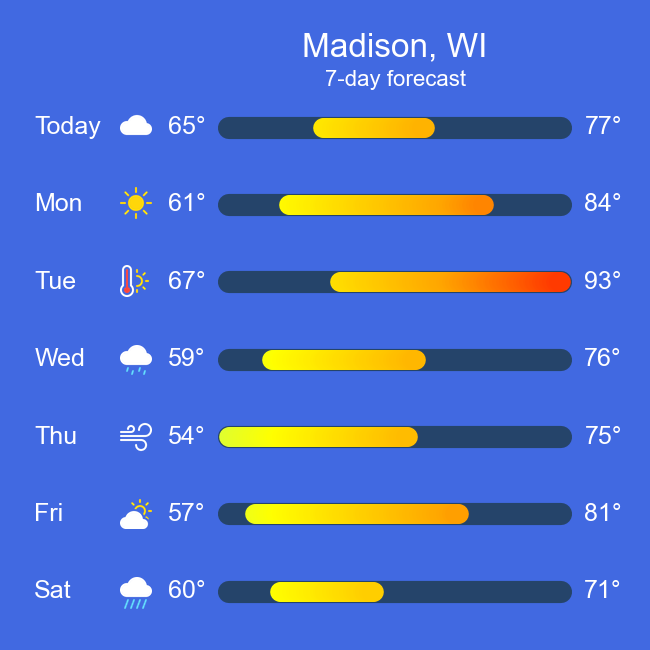
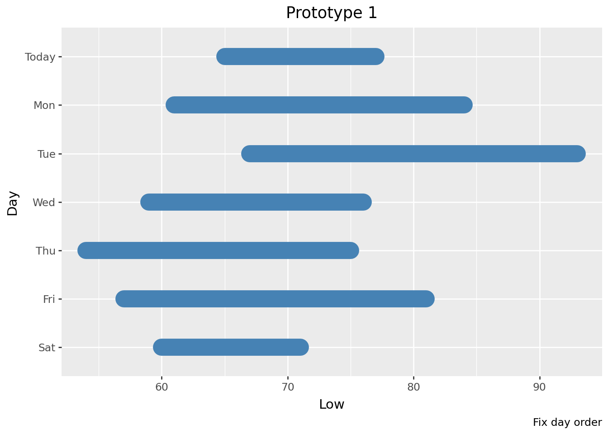
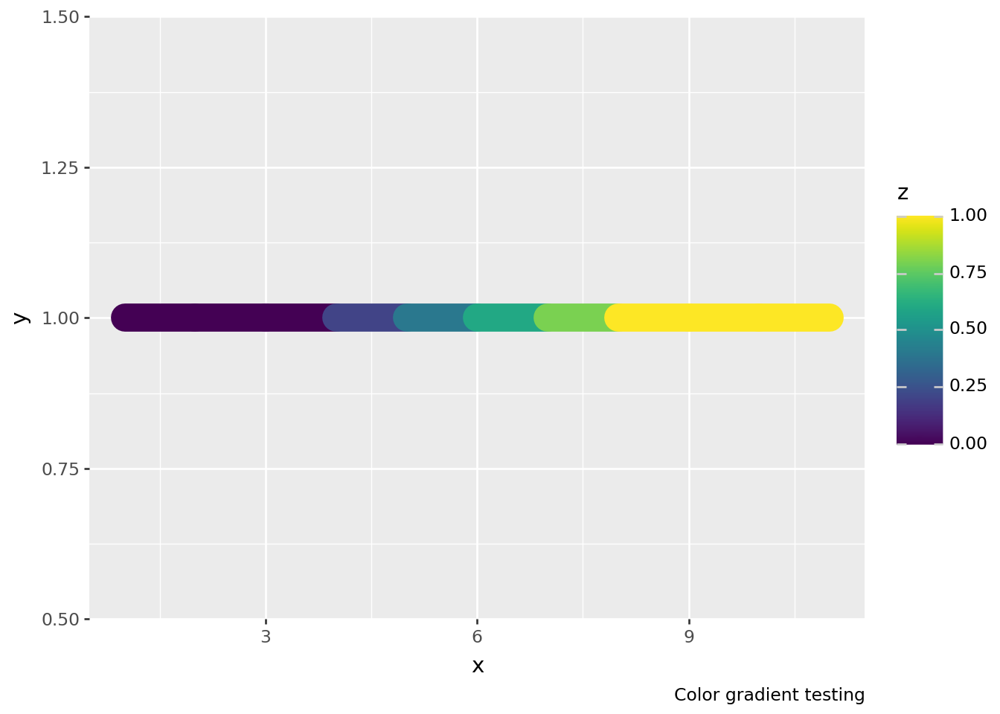
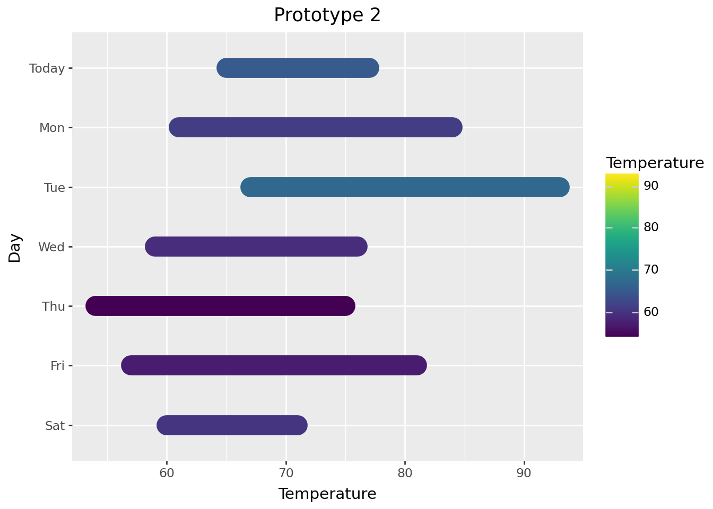
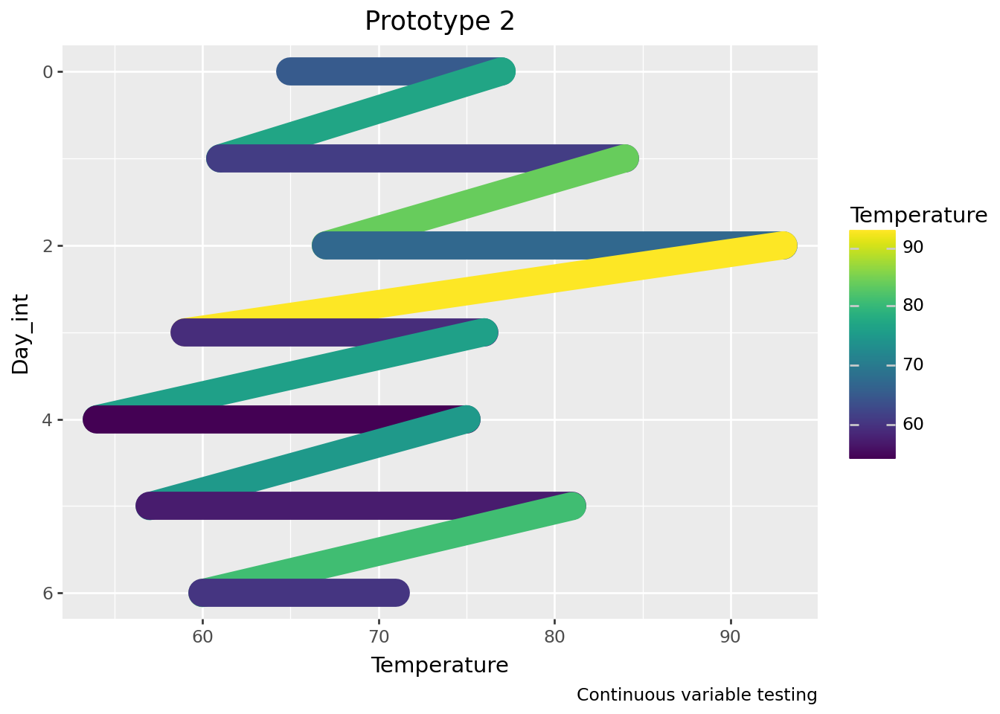
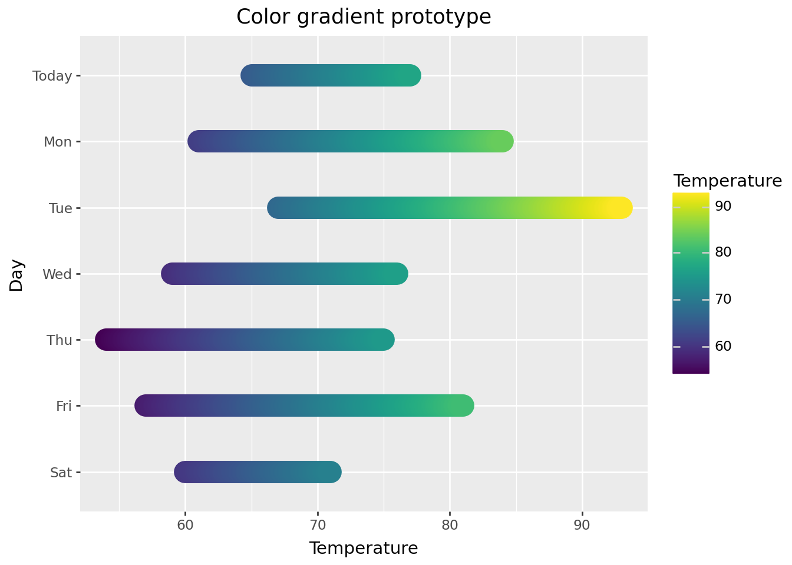
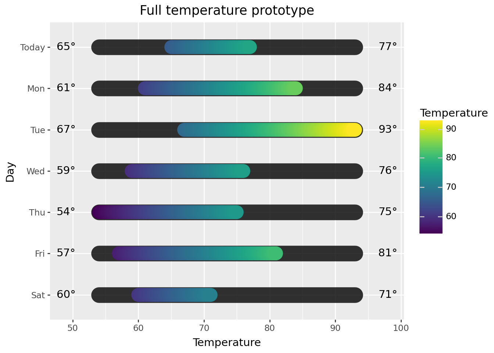
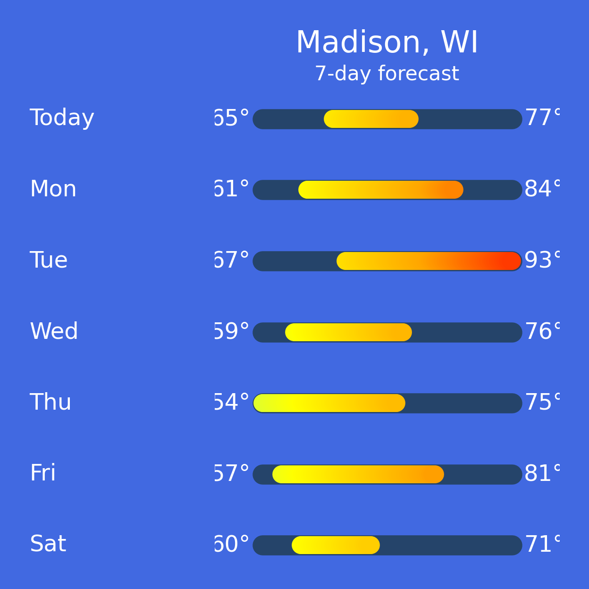
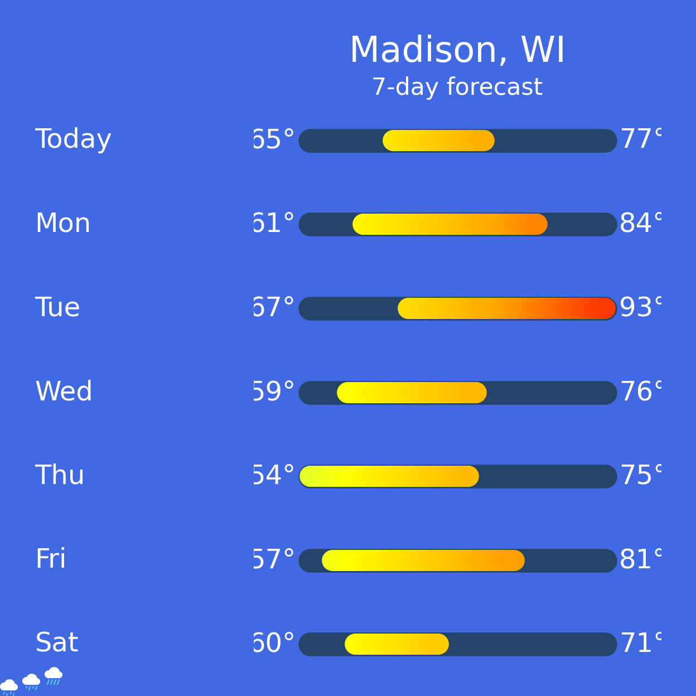
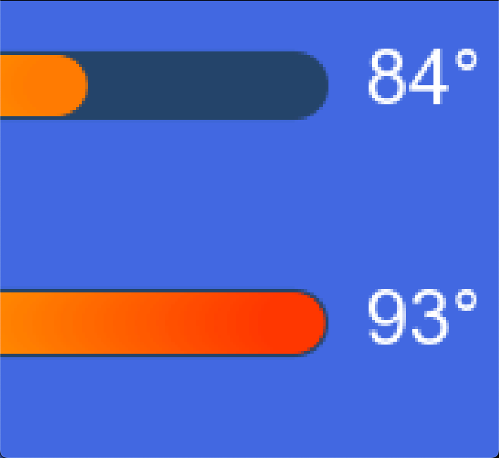

import polars as pl
import plotnine as p9
pl.__version__, p9.__version__('1.30.0', '0.15.0a2')John T. Randolph
The code in this jupyter notebook walks through generating plots to represent a 7 day forecast (inspired by the Apple Weather app) using plotnine. Here is an example of a finished plot:

The plot uses: * geom_path to draw temperature ranges (geom_line would have worked just as well) * geom_text to label the high and low temperatures * watermark to display the weather icons
The remaining plot components are the title, subtitle, and y-axis labels.
The icons were modified from the open source icon library, Bootstrap Icons: I colorized the icons and saved them as PNGs. Thanks to the Bootstrap team and contributors for Bootstrap Icons and the Bootstrap framework.
The trickier parts of creating this plot are getting the color gradient right and positioning the icons. The most time-consuming part is tweaking the plot’s theme to polish the plot’s look including placement and styling of elements.
If you want to skip past the prototypes that eventually led to the final product, jump to the Final Plot section. After working out how I want the plot to look, I write a function to facilitate generating additional plots at the end of this notebook.
The code uses polars to read in the raw data and manipulate it to be ready to create the plot in plotnine. Here is an example table of raw data:
| Day | Low | High | Conditions |
|---|---|---|---|
| Today | 65 | 77 | Cloudy |
| Mon | 61 | 84 | Sunny |
| Tue | 67 | 93 | Hot |
| Wed | 59 | 76 | Drizzle |
| Thu | 54 | 75 | Windy |
| Fri | 57 | 81 | Party cloudy |
| Sat | 60 | 71 | Heavy rain |
Let’s generate a first prototype of a plot to figure out if/how the data needs to be prepped for plotting, try out different strategies, and get a feel for how the data can be represented. This first prototype tries using geom_segment, but the final plot uses geom_path.
geom_segment requires x, xend, y, and yend aesthetics. We can map “Low” and “High” to x and xend, respectively, and “Day” to y and yend.
We can use the raw data with geom_segment with minimal work: we’ll just want to type the “Day” column as a categorical column to establish the correct plotting order. If we don’t do this, the days will be plot in alphabetical order.
Since this is just a 7-day forecast, we don’t need to worry about non-unique “Day” values. If there were non-unique “Day” values, we would need a different strategy such as using a unique value to order the days while using the “Day” value for labeling.
Don’t be concerned about the “Conditions” column for now. We’ll figure out what, if anything, to do with it after figuring out most of the other parts.
raw_data = pl.read_csv('./data/7-day_forecast.csv')
raw_data = raw_data.with_columns(pl.col('Day').cast(pl.Categorical))
raw_data| Day | Low | High | Conditions |
|---|---|---|---|
| cat | i64 | i64 | str |
| "Today" | 65 | 77 | "Cloudy" |
| "Mon" | 61 | 84 | "Sunny" |
| "Tue" | 67 | 93 | "Hot" |
| "Wed" | 59 | 76 | "Drizzle" |
| "Thu" | 54 | 75 | "Windy" |
| "Fri" | 57 | 81 | "Partly cloudy" |
| "Sat" | 60 | 71 | "Heavy rain" |
I’m not showing the most basic prototype below, but if you want to see it, comment out line 4 and uncomment line 5 in the code block below.
From the most basic prototype, I made the design choices that I want a thicker line, I want round ends, and I want color in the line, ideally a color gradient. The first prototype on display below shows attempts at working towards the design choices.
The plot is starting to come together a little bit but there are a few things to take from this prototype:
There are a couple of strategies we can use to get the days ordered the way I want: we can either reverse the ordinality of the days in the dataframe or we can flip the y-axis. We can’t use scale_y_reverse because we do not have continuous values, but we can use scale_y_discrete and set the limits in reverse order. I use scale_y_discrete to reverse the order as demonstrated below.
# reverse order of the days with scale_y_discrete
(
plot
+ p9.labs(title='Prototype 1', caption='Fix day order')
+ p9.scale_y_discrete(limits=raw_data['Day'].reverse().to_list())
).show()
It looks like geom_segment doesn’t produce round ends although the code specifies lineend='round'. I’d like to dig into the code a bit to see if this observation might be similar to this issue and commit but I don’t have cycles available to do that right now. It took me a couple weeks to get to it but taking a look at the geom_segment code, I believe that geom_segment does not pass on the value of lineend and it can be solved similarly to the commit noted above; I’ve opened an issue.
Before moving on, let’s try one thing with geom_segment and a color gradient. I create a simple dataframe that has data to draw horizontal line segments at y=1. Each line segment has a z value ranging from 0 - 1 which we map to the color aesthetic.
plot_data = pl.DataFrame({
'x': range(1, 11),
'y': [1] * 10,
'z': [0] * 3 + [0.2, 0.4, 0.6, 0.8] + [1] * 3
}, strict=False)
plot_data = plot_data.with_columns(
xend = pl.col('x') + 1
)
plot_data| x | y | z | xend |
|---|---|---|---|
| i64 | i64 | f64 | i64 |
| 1 | 1 | 0.0 | 2 |
| 2 | 1 | 0.0 | 3 |
| 3 | 1 | 0.0 | 4 |
| 4 | 1 | 0.2 | 5 |
| 5 | 1 | 0.4 | 6 |
| 6 | 1 | 0.6 | 7 |
| 7 | 1 | 0.8 | 8 |
| 8 | 1 | 1.0 | 9 |
| 9 | 1 | 1.0 | 10 |
| 10 | 1 | 1.0 | 11 |
plot = (
p9.ggplot(plot_data, p9.aes(x='x', xend='xend', y='y', yend='y', color='z'))
+ p9.labs(caption='Color gradient testing')
+ p9.geom_segment(size=8, lineend='round')
)
plot.show()
Here’s the start of a color gradient effect, but we’ll need a lot more segments to get a smooth gradient. If you zoom in and take a close look at the segments, there are seams between the segments and there’s still the issue with not having rounded ends. We could deal with the seams by plotting overlapping line segments and try using geom_points to simulate rounded ends, but these workarounds suggest that it’s worth considering what other approaches might be out there. Let’s move on to trying geom_path.
Let’s try using geom_path; this is a geom that I almost never use, but its reference page shows a promising example with a color gradient at the very bottom. We’ll try here again to get a rounded end too. In retrospect, I could have used geom_line instead, but the reference page for geom_path is where the inspiration for the color gradient originated from.
geom_path requires x and y aesthetics where it connects points according to their order in the dataframe. I want to map a temperature to x and “Day” to y, so I need the Low and High temperatures for each day to be separated to different rows. This will require reshaping the data: in this case, we’ll melt the data from wide to long format so that we have “Temperature” (x) and “Day” (y) columns.
I’m going to work from the raw_data that was read in previously where Day is a categorical column.
plot_data = (
raw_data
.melt(id_vars=['Day'], value_vars=['High', 'Low'], variable_name='Low/High', value_name='Temperature')
.sort(['Day', 'Temperature'], descending=False)
)
plot_data/tmp/ipykernel_4035/460842764.py:3: DeprecationWarning: `DataFrame.melt` is deprecated; use `DataFrame.unpivot` instead, with `index` instead of `id_vars` and `on` instead of `value_vars`| Day | Low/High | Temperature |
|---|---|---|
| cat | str | i64 |
| "Today" | "Low" | 65 |
| "Today" | "High" | 77 |
| "Mon" | "Low" | 61 |
| "Mon" | "High" | 84 |
| "Tue" | "Low" | 67 |
| … | … | … |
| "Thu" | "High" | 75 |
| "Fri" | "Low" | 57 |
| "Fri" | "High" | 81 |
| "Sat" | "Low" | 60 |
| "Sat" | "High" | 71 |
I had imagined/hoped that geom_path might be able to auto-calculate a color gradient for the line between each of the two points, but ultimately the plot below demonstrates that this isn’t the case.
plot = (
p9.ggplot(plot_data, p9.aes(x='Temperature', y='Day', color='Temperature'))
+ p9.labs(title='Prototype 2')
+ p9.geom_path(size=8, lineend='round')
+ p9.scale_y_discrete(limits=raw_data['Day'].reverse().to_list())
)
plot.show()
group aesthetic?You might have noticed that the code above doesn’t map anything to the group aesthetic. Initially, I mapped “Day” to the group aesthetic, but it doesn’t appear to matter in this case. I believe it’s because y is mapped to discrete rather than continuous values. Look at the plot below to see what happens if y is mapped to continuous values without a group aesthetic.
Since we’ll have continuous values, we can use scale_y_reverse to reverse the order of the days.
# prep dictionary to map days to numbers
days = plot_data.get_column('Day').unique(maintain_order=True)
days = dict(zip(days, range(days.len())))
days{'Today': 0, 'Mon': 1, 'Tue': 2, 'Wed': 3, 'Thu': 4, 'Fri': 5, 'Sat': 6}# convert days to numbers in "Day_int" column
plot_data_test = plot_data.with_columns(
pl.col('Day').cast(str).replace(days).cast(int).alias('Day_int')
)
plot_data_test| Day | Low/High | Temperature | Day_int |
|---|---|---|---|
| cat | str | i64 | i64 |
| "Today" | "Low" | 65 | 0 |
| "Today" | "High" | 77 | 0 |
| "Mon" | "Low" | 61 | 1 |
| "Mon" | "High" | 84 | 1 |
| "Tue" | "Low" | 67 | 2 |
| … | … | … | … |
| "Thu" | "High" | 75 | 4 |
| "Fri" | "Low" | 57 | 5 |
| "Fri" | "High" | 81 | 5 |
| "Sat" | "Low" | 60 | 6 |
| "Sat" | "High" | 71 | 6 |
# plot with Day_int mapped to y; switch between commenting out lines 3 and 4 to see what happens
plot = (
p9.ggplot(plot_data_test, p9.aes(x='Temperature', y='Day_int', color='Temperature'))
# p9.ggplot(plot_data_test, p9.aes(x='Temperature', y='Day_int', color='Temperature', group='Day_int'))
+ p9.labs(title='Prototype 2', caption='Continuous variable testing')
+ p9.geom_path(size=8, lineend='round')
+ p9.scale_y_reverse()
)
plot.show()
geom_path testingThe continuous variable testing plot above hints at this but let’s take another look at what’s going on with geom_path and the color: calculate a midpoint between Low and High and then remake the plot with geom_path.
plot_data = (
raw_data
.with_columns(Mid = (pl.col('High') + pl.col('Low')) / 2)
.melt(id_vars=['Day'], value_vars=['High', 'Mid', 'Low'], variable_name='Low/High', value_name='Temperature')
.sort(['Day', 'Temperature'], descending=False)
)
plot_data/tmp/ipykernel_4035/3155234102.py:4: DeprecationWarning: `DataFrame.melt` is deprecated; use `DataFrame.unpivot` instead, with `index` instead of `id_vars` and `on` instead of `value_vars`| Day | Low/High | Temperature |
|---|---|---|
| cat | str | f64 |
| "Today" | "Low" | 65.0 |
| "Today" | "Mid" | 71.0 |
| "Today" | "High" | 77.0 |
| "Mon" | "Low" | 61.0 |
| "Mon" | "Mid" | 72.5 |
| … | … | … |
| "Fri" | "Mid" | 69.0 |
| "Fri" | "High" | 81.0 |
| "Sat" | "Low" | 60.0 |
| "Sat" | "Mid" | 65.5 |
| "Sat" | "High" | 71.0 |
geom_pathgeom_path does not change color until the next data pointA color gradient is going to require some more work but geom_path looks like it has potential to do the job.
Let’s move quickly through a couple prototypes that get all of the temperature info onto the plot.
We’ll use geom_path still, but we’re going to create a dataframe which has a row for every 0.1 degree between the Low and High temperatures on each day. This let’s us get a nice color gradient for the temperature range.
| Day | Low | High | Conditions |
|---|---|---|---|
| cat | i64 | i64 | str |
| "Today" | 65 | 77 | "Cloudy" |
| "Mon" | 61 | 84 | "Sunny" |
| "Tue" | 67 | 93 | "Hot" |
| "Wed" | 59 | 76 | "Drizzle" |
| "Thu" | 54 | 75 | "Windy" |
| "Fri" | 57 | 81 | "Partly cloudy" |
| "Sat" | 60 | 71 | "Heavy rain" |
# create "Temperature" column that is a list of values from Low to High by 0.1 increments
plot_data = (
raw_data
.with_columns(
Temperature = pl.int_ranges(pl.col('Low') * 10, pl.col('High') * 10 + 1).list.eval(pl.element() / 10)
)
.select('Day', 'Conditions', 'Temperature')
.explode('Temperature')
)
plot_data| Day | Conditions | Temperature |
|---|---|---|
| cat | str | f64 |
| "Today" | "Cloudy" | 65.0 |
| "Today" | "Cloudy" | 65.1 |
| "Today" | "Cloudy" | 65.2 |
| "Today" | "Cloudy" | 65.3 |
| "Today" | "Cloudy" | 65.4 |
| … | … | … |
| "Sat" | "Heavy rain" | 70.6 |
| "Sat" | "Heavy rain" | 70.7 |
| "Sat" | "Heavy rain" | 70.8 |
| "Sat" | "Heavy rain" | 70.9 |
| "Sat" | "Heavy rain" | 71.0 |
Let’s use our exploded out dataframe and see if the color gradient works.
plot = (
p9.ggplot(plot_data, p9.aes(x='Temperature', y='Day'))
+ p9.labs(title="Color gradient prototype")
+ p9.geom_path(p9.aes(color='Temperature'), size=8, lineend='round')
+ p9.scale_y_discrete(limits=raw_data['Day'].reverse().to_list())
)
plot.show()
The gradient looks good! We’ll change the color scale to something more appropriate to express temperature range later.
Let’s add:
For the 7-day range, I want something that’s underneath (on the z-axis) and a little larger than the temperature range. The effect I want is a thin border around the edges, especially at the extreme low and high temperatures. This means using a geom_path with a slightly larger size that spans from the lowest low temperature to the highest high temperature. Then, add the daily temperature ranges with another geom_path that layers on top. We’ll create a dataframe to make the underlayment easy to add.
For the temperature labels, we’ll use geom_text and create a dataframe with columns that can map to the x, y, and label aesthetics to make them easy to add. The labels will be placed to the left and right of the full 7-day temperature range for each day.
# create dataframe for temperature range underlayment
temp_range = pl.DataFrame({
'Day': raw_data.get_column('Day'),
'Temperature': [low_high] * len(raw_data)
}).explode('Temperature')
temp_range| Day | Temperature |
|---|---|
| cat | i64 |
| "Today" | 54 |
| "Today" | 93 |
| "Mon" | 54 |
| "Mon" | 93 |
| "Tue" | 54 |
| … | … |
| "Thu" | 93 |
| "Fri" | 54 |
| "Fri" | 93 |
| "Sat" | 54 |
| "Sat" | 93 |
# create dataframe for temperature labels; the offset used here will look better in the final plot
x_offset = 5
temp_labels = (
raw_data.lazy()
.melt(id_vars=['Day', 'Conditions'], value_vars=['Low', 'High'], value_name='temperature')
.with_columns(
(pl.col('temperature').cast(str) + pl.lit('°')).alias('label'),
pl.when(pl.col('variable') == 'Low')
.then(pl.lit(low_high[0]) - x_offset)
.otherwise(pl.lit(low_high[1]) + x_offset)
.alias('x')
)
.sort('Day')
.collect()
)
temp_labels/tmp/ipykernel_4035/3089986775.py:5: DeprecationWarning: `LazyFrame.melt` is deprecated; use `LazyFrame.unpivot` instead, with `index` instead of `id_vars` and `on` instead of `value_vars`| Day | Conditions | variable | temperature | label | x |
|---|---|---|---|---|---|
| cat | str | str | i64 | str | i32 |
| "Today" | "Cloudy" | "Low" | 65 | "65°" | 49 |
| "Today" | "Cloudy" | "High" | 77 | "77°" | 98 |
| "Mon" | "Sunny" | "Low" | 61 | "61°" | 49 |
| "Mon" | "Sunny" | "High" | 84 | "84°" | 98 |
| "Tue" | "Hot" | "Low" | 67 | "67°" | 49 |
| … | … | … | … | … | … |
| "Thu" | "Windy" | "High" | 75 | "75°" | 98 |
| "Fri" | "Partly cloudy" | "Low" | 57 | "57°" | 49 |
| "Fri" | "Partly cloudy" | "High" | 81 | "81°" | 98 |
| "Sat" | "Heavy rain" | "Low" | 60 | "60°" | 49 |
| "Sat" | "Heavy rain" | "High" | 71 | "71°" | 98 |
plot = (
p9.ggplot(plot_data, p9.aes(x='Temperature', y='Day'))
+ p9.labs(title="Full temperature prototype")
+ p9.geom_path(data=temp_range, size=9, color='black', lineend='round', alpha=0.8)
+ p9.geom_path(p9.aes(color='Temperature'), size=8, lineend='round')
+ p9.geom_text(data=temp_labels, mapping=p9.aes(x='x', label='label'), ha='center', va='center')
+ p9.scale_y_discrete(limits=raw_data['Day'].reverse().to_list())
)
plot.show()
Let’s leave the weather icons for the very end and work on polishing this plot. This includes adjusting colors, placement, spacing, and sizes of elements and for a really polished plot, this part often takes the most time. I won’t go into detail about each adjustment, but will point out a few things below.
You’ll see a version of the plot without icons first, and then a version with icons.
For convenience, here is all of the code to prep the data for the final plot in one place.
raw_data = pl.read_csv('./data/7-day_forecast.csv')
raw_data = raw_data.with_columns(pl.col('Day').cast(pl.Categorical))
low_high = [raw_data.get_column('Low').min(), raw_data.get_column('High').max()]
# daily temperature range data
plot_data = (
raw_data
.with_columns(
Temperature = pl.int_ranges(pl.col('Low') * 10, pl.col('High') * 10 + 1).list.eval(pl.element() / 10)
)
.select('Day', 'Conditions', 'Temperature')
.explode('Temperature')
)
# underlayment data
temp_range = pl.DataFrame({
'Day': raw_data.get_column('Day'),
'Temperature': [low_high] * len(raw_data)
}).explode('Temperature')
# text label data
x_offset = 5 # this is calculated dynamically in plot_forecast.py
temp_labels = (
raw_data
.melt(id_vars=['Day', 'Conditions'], value_vars=['Low', 'High'], value_name='temperature')
.with_columns(
(pl.col('temperature').cast(str) + pl.lit('°')).alias('label'),
pl.when(pl.col('variable') == 'Low')
.then(pl.lit(low_high[0]) - x_offset)
.otherwise(pl.lit(low_high[1]) + x_offset)
.alias('x')
)
.sort('Day')
)/tmp/ipykernel_4035/588894012.py:25: DeprecationWarning: `DataFrame.melt` is deprecated; use `DataFrame.unpivot` instead, with `index` instead of `id_vars` and `on` instead of `value_vars`Madison, WI is my current location and this is an actual 7-day forecast from late mid-June when I first started thinking about this. I did take some liberty on Tuesday to increase the high temperature for reasons you’ll see in the plot with icons. Check line 11 to see how I define the color gradient. I’ve left a gap for the weather icons to be added later, and this plot is going to get stretched out vertically.
You’ll notice that a lot of work happens in theme(). Also, there are a few variables I define at the top and these are where I spent more time trying out different settings. I had never used named colors from the xkcd color name survey before, but you can use them by placing xkcd: before the color name.
Final comment here on the tweaks: I use Arial instead of Helvetica font. Look at the “Full temperature prototype” plot above and you might notice that some of the numbers look a little uneven. The “65°” text label in the upper-left is an example of this. I think the Helvetica font is getting rendered a little unevenly and Arial looks better. I tried 20 different fonts and settled on Arial.
range_bg = 'xkcd:dark blue grey'
font_size = 18
font_family = 'Arial' # default is Helvetica; I think Arial looks a tiny bit better
plot = (
p9.ggplot(plot_data, p9.aes(x='Temperature', y='Day'))
+ p9.labs(title="Madison, WI", subtitle="7-day forecast", x="", y="")
+ p9.geom_path(data=temp_range, size=9, color=range_bg, lineend='round', alpha=0.8)
+ p9.geom_path(p9.aes(color='Temperature'), size=8, lineend='round')
+ p9.geom_text(data=temp_labels, mapping=p9.aes(x='x', label='label'), color='white', size=font_size, ha='center', va='center')
+ p9.scale_color_gradientn(colors=['deepskyblue', 'aqua', 'palegreen', 'yellow', 'orange', 'red'], limits=[0, 100])
+ p9.scale_y_discrete(limits=raw_data['Day'].reverse().to_list(), expand=(0, 0.5, 0, 0.4))
+ p9.theme_void()
+ p9.theme(
text=p9.element_text(family=font_family, color='white'),
plot_background=p9.element_rect(fill='royalblue'),
plot_title=p9.element_text(size=24),
plot_subtitle=p9.element_text(size=16, ha='center'),
plot_margin_top=0.05,
plot_margin_right=0.04,
plot_margin_bottom=0.03,
plot_margin_left=-0.05,
axis_text_y=p9.element_text(angle=0, size=font_size, va='center', ha='left', margin={'t': 0, 'r': 95, 'b': 0, 'l': 0, 'units': 'pt'}),
axis_text_x=p9.element_blank(),
legend_position='none',
)
)
plot.show()findfont: Font family 'Arial' not found.
findfont: Font family 'Arial' not found.
findfont: Font family 'Arial' not found.
findfont: Font family 'Arial' not found.
findfont: Font family 'Arial' not found.
findfont: Font family 'Arial' not found.
findfont: Font family 'Arial' not found.
findfont: Font family 'Arial' not found.
findfont: Font family 'Arial' not found.
findfont: Font family 'Arial' not found.
findfont: Font family 'Arial' not found.
findfont: Font family 'Arial' not found.
findfont: Font family 'Arial' not found.
findfont: Font family 'Arial' not found.
findfont: Font family 'Arial' not found.
findfont: Font family 'Arial' not found.
findfont: Font family 'Arial' not found.
findfont: Font family 'Arial' not found.
findfont: Font family 'Arial' not found.
findfont: Font family 'Arial' not found.
findfont: Font family 'Arial' not found.
findfont: Font family 'Arial' not found.
findfont: Font family 'Arial' not found.
findfont: Font family 'Arial' not found.
findfont: Font family 'Arial' not found.
findfont: Font family 'Arial' not found.
findfont: Font family 'Arial' not found.
findfont: Font family 'Arial' not found.
findfont: Font family 'Arial' not found.
findfont: Font family 'Arial' not found.
findfont: Font family 'Arial' not found.
findfont: Font family 'Arial' not found.
findfont: Font family 'Arial' not found.
findfont: Font family 'Arial' not found.
findfont: Font family 'Arial' not found.
findfont: Font family 'Arial' not found.
findfont: Font family 'Arial' not found.
findfont: Font family 'Arial' not found.
findfont: Font family 'Arial' not found.
findfont: Font family 'Arial' not found.
findfont: Font family 'Arial' not found.
findfont: Font family 'Arial' not found.
findfont: Font family 'Arial' not found.
findfont: Font family 'Arial' not found.
findfont: Font family 'Arial' not found.
findfont: Font family 'Arial' not found.
findfont: Font family 'Arial' not found.
findfont: Font family 'Arial' not found.
findfont: Font family 'Arial' not found.
Let’s take a quick look at using watermark to add .png images to a plot. The watermark feature takes the path to an image, and x and y pixel coordinates, then places the image with respect to the origin, [0, 0], which is the bottom-left corner of the plot.
I didn’t expect it to work but I did try using an .svg image with watermark and it didn’t work.
# add 3 weather icons to the plot in the bottom-left corner
(
plot
+ p9.watermark('./img/misc/weather-forecast/drizzle_32px.png')
+ p9.watermark('./img/misc/weather-forecast/rain_32px.png', xo=40, yo=10)
+ p9.watermark('./img/misc/weather-forecast/heavy_rain_32px.png', xo=80, yo=20)
).show()findfont: Font family 'Arial' not found.
findfont: Font family 'Arial' not found.
findfont: Font family 'Arial' not found.
findfont: Font family 'Arial' not found.
findfont: Font family 'Arial' not found.
findfont: Font family 'Arial' not found.
findfont: Font family 'Arial' not found.
findfont: Font family 'Arial' not found.
findfont: Font family 'Arial' not found.
findfont: Font family 'Arial' not found.
findfont: Font family 'Arial' not found.
findfont: Font family 'Arial' not found.
findfont: Font family 'Arial' not found.
findfont: Font family 'Arial' not found.
findfont: Font family 'Arial' not found.
findfont: Font family 'Arial' not found.
findfont: Font family 'Arial' not found.
findfont: Font family 'Arial' not found.
findfont: Font family 'Arial' not found.
findfont: Font family 'Arial' not found.
findfont: Font family 'Arial' not found.
findfont: Font family 'Arial' not found.
findfont: Font family 'Arial' not found.
findfont: Font family 'Arial' not found.
findfont: Font family 'Arial' not found.
findfont: Font family 'Arial' not found.
findfont: Font family 'Arial' not found.
findfont: Font family 'Arial' not found.
findfont: Font family 'Arial' not found.
findfont: Font family 'Arial' not found.
findfont: Font family 'Arial' not found.
findfont: Font family 'Arial' not found.
findfont: Font family 'Arial' not found.
findfont: Font family 'Arial' not found.
findfont: Font family 'Arial' not found.
findfont: Font family 'Arial' not found.
findfont: Font family 'Arial' not found.
findfont: Font family 'Arial' not found.
findfont: Font family 'Arial' not found.
findfont: Font family 'Arial' not found.
findfont: Font family 'Arial' not found.
findfont: Font family 'Arial' not found.
findfont: Font family 'Arial' not found.
findfont: Font family 'Arial' not found.
findfont: Font family 'Arial' not found.
findfont: Font family 'Arial' not found.
findfont: Font family 'Arial' not found.
findfont: Font family 'Arial' not found.
findfont: Font family 'Arial' not found.
Since the coordinates are in pixels, this makes things a little trickier. To handle this, I created a version of the plot at a specific resolution to figure out where the place the icons for each day. I’m not going to use plot.show() since the placement probably will look off, but I’ll save the plot to a file and then display it in this jupyter notebook.
| Day | Low | High | Conditions |
|---|---|---|---|
| cat | i64 | i64 | str |
| "Today" | 65 | 77 | "Cloudy" |
| "Mon" | 61 | 84 | "Sunny" |
| "Tue" | 67 | 93 | "Hot" |
| "Wed" | 59 | 76 | "Drizzle" |
| "Thu" | 54 | 75 | "Windy" |
| "Fri" | 57 | 81 | "Partly cloudy" |
| "Sat" | 60 | 71 | "Heavy rain" |
Here’s the final plot:
I think this is a satisfying detail: zoom into the extreme low or high temperature on the plot and see the border formed by the underlayment around the temperature range.

I put the code to generate the plot in a function in plot_forecast.py; the function doesn’t have data validation or error checking. You can run from plot_forecast import plot_forecast, then call plot_forecast(forecast, location, outfile) to generate a plot.
While testing out plot_forecast on a wider range of data, I found some things to tweak:
scale_color_gradientn to tweak the colors
scale_x_continuous: without it, temperatures with 3 digits were slightly clippedI included 11 weather icons but there are additional weather icons available in the Bootstrap Icons library.
I learned some new things while working on this. If you went through this notebook, I hope you did too.